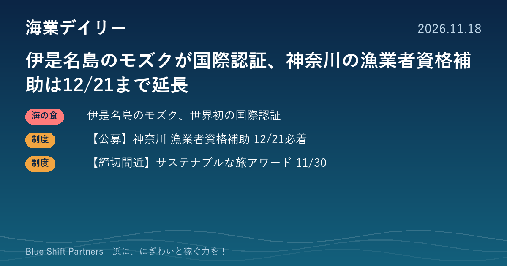

2026.11.18
伊是名島のモズクが国際認証、神奈川の漁業者資格補助は12/21まで延長

沖縄・伊是名島のモズク生産者グループが、モズクとして世界初となるASC-MSC海藻（藻類）認証を取得しました。神奈川県の新規漁業者向け資格取得補助は申込期限が延び、観光庁の「サステナブルな旅アワード」は11月30日が締切です。
沖縄・伊是名島のモズク生産者グループ、モズクで世界初のASC-MSC海藻（藻類）認証を取得
ちゅらゆーな株式会社（那覇市）をグループ管理者とする伊是名島のモズク生産者グループ（生産者5名）が、10月20日付でASC-MSC海藻（藻類）認証を取得したと発表しました。対象はオキナワモズクで、審査は第三者認証機関のDNVが行い、モズクとしては世界初の取得とされています。11月12日にはハレクラニ沖縄（恩納村）で認証の授与式が開かれました。
ここがポイント：小さな生産者グループでも、管理者を立ててまとまれば国際認証に手が届く例です。認証は商品の差別化や、ホテル・海外向けの販路づくりの材料になります。
出典：ちゅらゆーな株式会社 プレスリリース（PR TIMES）（2026-11-12）
【公募】神奈川県「漁業就業・定着化のための資格取得支援補助金」、申込期限を12月21日必着に延長
神奈川県は、漁業に就いて3年以内の県内の漁業就業者が小型船舶操縦士、潜水士、フォークリフト運転技能講習などの資格を取る際の講習料・受験料を補助する制度の募集期間を、12月21日（月）必着まで延長しました。補助は対象経費の3分の1以内で、1件あたり上限5万円です。取得後に県内で3年以上漁業を続けることが条件で、続けられない場合は全額返還となります。申請は就業地域の漁業協同組合を通じて行い、教習機関等へ申し込む前に交付決定を受ける必要があります。予算がなくなり次第終了します。
ここがポイント：漁協にとっては、新しく入った担い手の資格取得を後押しし、定着につなげる手立てになります。講習の申込より前に交付決定が要るため、受講予定のある方は早めに漁協へ相談するのが安全です。
出典：神奈川県 環境農政局 水産課「漁業就業・定着化のための資格取得支援補助金の申込み（令和8年度）」（2026-10-30）
【締切間近】観光庁「第4回サステナブルな旅アワード」、応募は11月30日17時まで
観光庁は、持続可能な観光につながる優良な旅行商品・取組を募り、国内外に発信する「第4回サステナブルな旅アワード」の応募を11月30日（月）17時まで受け付けています。応募できるのは旅行業者のほか、地方公共団体、観光振興団体、民間企業、NPO法人などで、旅行業者と連携して旅行商品を販売している取組に限られます。応募は所定の様式に記入し、公募要領に記載のフォームから事務局へ提出します。
ここがポイント：漁業体験や漁村ツアーを旅行会社と組んで販売している浜の協議会・事業者にとって、取組を全国に知ってもらう機会になります。観光庁のページに載っているGSTC基準の資料が新しいものに差し替えられているため、確認してから準備してください。
出典：観光庁「「第４回サステナブルな旅アワード」の公募を開始します」（2026-11-06）
今日の3本に共通するのは、浜の取組を外から見える形にする仕組みです。国際認証は商品に、アワードは体験型の旅に、資格は人に、それぞれ信用を付けます。自分たちの浜で使えるものがないか、ひとつずつ当てはめてみてはいかがでしょうか。